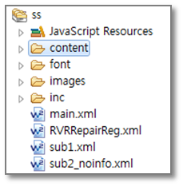
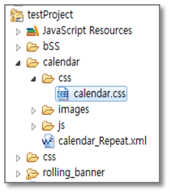

6.Context Root
프로젝트의 최상위 루트가 되는 경로입니다. 이 컨텍스트 루트를 루트('/') 이외의 이름으로 설정하게 되면 프로젝트 내에 참조하는 경로(링크 타입의 외부 js 및 css 참조) 및 xml과 css, js 내의 이미지 경로 등에 모두 컨텍스트 루트를 포함한 경로여야 합니다.
컨텍스트 루트 설정 예제 1)

[그림 6-1]폴더 구조
설정되어 있는 Context Root :/ssps/symc
xml 내에 링크타입으로 참조된 css :/ssps/symc/inc/css/style_a.css
xml 내에 링크타입으로 참조된 js :/ssps/symc/inc/js/jQuery.js
xml 내에 이미지 경로 :/ssps/symc/images/common/logo.gif
참조된 css 내의 이미지 경로 :/ssps/symc/images/bg_header_01.gif
컨텍스트 루트 설정 예제 2)

[그림 6-2]폴더 구조
설정되어 있는 Context Root : /
calendar_Repeat.xml의 참조된 calendar.css 경로:
/calendar/css/calendar.css
calendar_Repeat.xml 내의 이미지 경로 :/calendar/images/bg_mon.gif
Context Root는 프로젝트의 복사, 이동으로 인해 변할 수 있으므로, 프로젝트 내에 파일을 열어 외부 파일들의 경로들이 어떠한지 살펴보고 컨텍스트 루트를 변경하는 것이 더 수월합니다.
컨텍스트 루트의 설정은 Project Explorer -> 해당 프로젝트 오른쪽 클릭 -> Properties -> WebSquare -> Context Root 에서 설정할 수 있습니다.